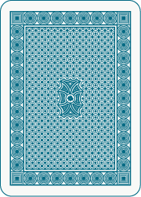
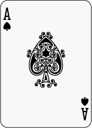

CSS Selector偽類選擇器nth選擇器偽元素選擇器
王志誠 網頁設計師常常把時間浪費在無意義的事情上
請問大家有看動畫的習慣嗎?
偽類的用處
- 增加網頁的互動性
- 適當的減少Class的使用
- 減少不必要的html標籤
1.增加網頁的互動性
偽類選擇器(-Wiki)
偽類指的是為不同的狀態而設定的一個類
動態偽類(-W3C Plus)
動態偽類，因為這些偽類並不存在於HTML中，而只有當用戶和網站交互的體現出來
偽類選擇器(動態偽類) 就像是
進擊的巨人-艾倫
明確的行動目標，可讓身體變化成巨人
CSS
div{
background-image: url("艾倫.jpg");
}
div:hover{
background-image: url("帥氣的巨人.jpg");
}
常用選擇器
| 屬性 | 狀態 |
|---|---|
:link |
超連結 未被存取 |
:visited |
超連結 被存取過 |
:hover |
鼠標 在元素上面 |
:active |
鼠標 在元素上按著 |
:focus |
焦點 在元素上 |
:target |
元素 被URL標記 |
:lang |
向帶有指定 lang 屬性的元素添加樣式。 |
&:hover
CSS
input[type="submit"]:hover{
background-color: #007db6;
}
&:focus
CSS
input[type="text"]{
transition: all, 0.5s;
}
input[type="text"]:focus{
box-shadow: inset 0 1px 2px rgba(0, 0, 0, 0.6);
}
&:hover > *
HTML <ul>
<li><a href="#">AA</a><ul>
<li><a href="#">A-1</a></li>
<li><a href="#">A-2</a></li>
<li><a href="#">A-3</a></li>
</ul></li>
<li><a href="#">BB</a><ul>
<li><a href="#">B-1</a></li>
<li><a href="#">B-2</a></li>
<li><a href="#">B-3</a></li>
</ul></li>
<li><a href="#">CC</a></li>
</ul>
CSS
ul li ul {
display: none;
}
ul li:hover > ul {
display: block;
}
&:hover


2.適當的減少Class的使用
nth選擇器
可將樣式套用到指定的元素上
nth選擇器 就像是
死亡筆記本-死神的眼睛
死神的眼睛 只要盯著一個人的臉（或相片、影像之類）看，就可以看見那個人的名字和壽命。
&:nth
- :fist-child選擇某個元素的第一個子元素
- :last-child選擇某個元素的最後一個子元素
- :nth-child()選擇某個元素的一個或多個特定的子元素
- :empty選擇的元素裡面沒有任何內容。
- ....
&:nth
HTML <ul class="deathNote">
<li></li>
<li></li>
<li></li>
<li></li>
<li></li>
</ul>
&:first-child
CSS
li:first-child{
死因: 心臟麻痺;
}
&:nth-child(even)
CSS
li:nth-child(even){
死因: 心臟麻痺;
}
&:nth-child(odd)
CSS
li:nth-child(odd){
死因: 心臟麻痺;
}
&:nth-child(-n+3)
CSS
li:nth-child(-n+3){
死因: 心臟麻痺;
}
3.減少不必要的html標籤
偽元素(-Wiki)
偽元素指的是為不同的狀態、性質而設定的元素
虛擬類別元素(-CSS3 樣式設計手冊)
以假定性html標籤製作出包圍後的元素
偽元素 就像是 火影忍者
鳴人的影分身之術，使他能夠一個人施展螺旋丸。
&:before,&:after
HTML <div class="naruto1"></div>
CSS
div.naruto1:before,div.naruto1:after{
忍術: 影分身;
}
CSS
div.naruto1:before,div.naruto1:after{
content: "";
忍術: 影分身;
}
HTML <div class="naruto1">
<&:before的位置>
<other element>
<other element>
<other element>
<other element>
<other element>
<&:after的位置>
</div>
&:after
CSS
a{
position:relative;
}
a:after{
content: "";
position: absolute;
left: 4px;
top: 4px;
right: 4px;
bottom: 4px;
border: #ccc 3px dashed
}